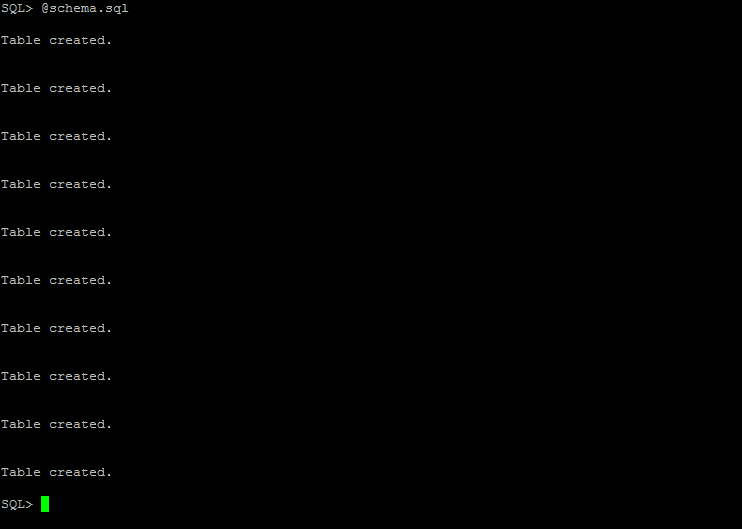
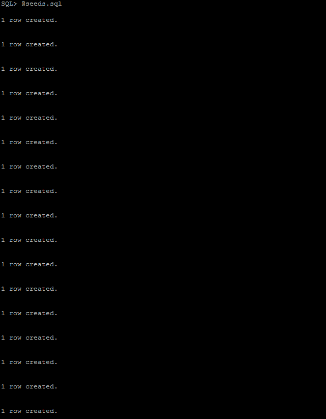
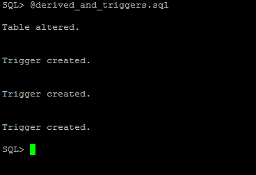
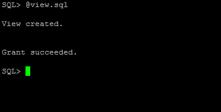

El diagrama ha sido generado con la herramienta GNU DIA. Ésta herramienta no deja usar flechas dobles en las asociaciones entre clases UML, por lo que se usará una flecha para asociaciones con cardinalidad máxima n, y no se usará flecha en el lado de la asociación con cardinalidad máxima 1.
n-m se designarán mediante el nombre las entidades relacionadas, ordenadas alfabéticamente y pluralizadas. (Ejemplo: teachers_subjects).id, mientras las claves foráneas seguirán la forma <entidad>_id.priority para ordenar en vez de órdenes fijos y únicos: No sólo simplifica el diseño sino que es más flexible.El modelo relacional, siguiendo las anteriores convenciones, quedaría:
Es apreciable que todas las tablas identificadas por un campo id (superclave) están en FNBC.
El código C relativo a la funcionalidad está todo en el directorio src/. El programa está organizado por subcomandos, declarados todos en el fichero principal app.sc:
/* The list of our supported commands */
struct command commands[] = {
{ "question", question, "manages questions",
"Usage: question [args...]\n"
"\t-a\tcreates a new question\t-a <statement>\n"
"\t-d\tdeletes a question\t-d <id>\n"
"\t-e\tedits a question\t-e <id> <statement>\n"
"\t-s\tshows a question\t-s <id>\n"
"\t-l\tlists all questions\t-l [<theme_id>] [--detailed]\n"
"\t-t\tlists all questions by theme and subject\t-t [--detailed]\n"
"Prints the question id on success to stdout." },
{ "answer", answer, "manages answers",
"Usage: answer [args...]\n"
"\t-a\tcreates an answer\t-a <question_id> <statement> [--correct]\n"
"\t-l\tlist answers for a question\t-l <question_id>\n"
"\t-d\tdeletes a question\t-d <id>" },
{ "exam", exam, "manages exams",
"Usage: answer [args...]\n"
"\t-l\tlist exams for a question\t-l <question_id>\n" },
{ "questions_themes", questions_themes, "Relation between questions and themes",
"\t-a\tads a new relationship\t-a <question_id> <theme_id>\n" },
{ "interactive", interactive, "Open an interactive session" },
{ NULL, NULL, NULL, NULL }
};El código relativo a la ejecución de los comandos, al ser algo no relacionado con el funcionamiento en sí de la práctica, está en el directorio lib/.
Cada estructura de la lista contiene el alias del comando (la forma de llamarlo), la función que ejecuta (siendo de la forma int (*) (int argc, char** argv)), una descripción corta que se escribe al ejecutar el comando autogenerado help, y una larga que se escribe al ejecutar el comando help <comando>.
Cada función es encargada de leer el resto de argumentos, y hacer lo que crea conveniente con ellos, y está declarada en un fichero .h con el mismo nombre, y definida en el fichero .sc correspondiente.
Las funciones interaccionan entre ellas usando el macro CALL (common.h), que manipula los argumentos convenientemente para simular una llamada desde la consola.
Así, escribir:
CALL(question, "-l");Es equivalente a ejecutar:
$ ./target/app question -lEl código sql se encuentra en la carpeta etc/sql/. Bajo el directorio etc/sql/src/ se encuentran:
schema.sql: El esquema de la base de datos.derived_and_triggers.sql: El atributo derivado y los triggers necesarios para gestionarlo automáticamente.seeds.sql: Inserción de valores de prueba de la base de datos.view.sql: La vista requerida por el enunciado.oracle-drops.sql: Drops de las tablas en oracle (en postgresql borramos la base de datos directamente).Nota: El esquema de la bd varía un poco con respecto al propuesto. Cada tema pertenece exclusivamente a una asignatura, y en vez de forzar órdenes, usamos un campo priority, que es más flexible. Se puede ver la estructura en el esquema de la carpeta doc/
Desde la carpeta del proyecto ejecutar:
$ ./configure
$ make
$ cd etc/sql && makeNota: en olivo, make debe ser sustituido por gmake
El primer make compilará la aplicación en el directorio target/, mientras que el segundo creará las tablas, el atributo derivado, la vista, e insertará los datos de prueba.
Usamos un pequeño archivo (oracle-prepro) para poder compilar con una interfaz similar a la de gcc o ecpg (compila el archivo pasado como segundo argumento con las opciones deseadas). Usamos la opción DYNAMIC=ORACLE ya que con esta configuración el mensaje de error en sqlca.sqlerrm.sqlerrmc funciona como se espera.
Los warnings generados por Pro*C acerca del macro CALL deberán ser ignorados. Se deben a que usa argumentos variables (C99), y el preprocesador analiza código según C90 (Ya va siendo hora de actualizar... ejem).
El comando interactive es un comando especial, ya que permite al usuario interaccionar directamente en lugar de mediante consola. Para usar la sesión interactiva usaremos:
$ ./target/app interactiveDonde se podrá ver un menú con el que el usuario puede interaccionar.
Se puede apreciar en la ayuda de los comandos que hay funcionalidad no requerida para el enunciado. Algunos ejemplos son:
./target/app question -d <id> # Borra una pregunta
./target/app question -e <id> <statement> # Cambia el enunciado de una pregunta
./target/app question -l [--detailed] # Muestra todas las preguntas, opcionalmente con sus detalles
./target/app exam -l <question_id> # Lista todos los exámenes para una pregunta
./target/app answer -l <question_id> # Lista todas las respuestas para una pregunta
./target/app answer -d <id> # Borra una respuestaNo se han hecho entradas interactivas de algunas de ellas para evitar complicar más.
Se ha evitado el tener que especificar la id al insertar los datos mediante un uso de triggers y secuencias. Los triggers son autogenerados por el script etc/sql/scripts/generate_triggers.sh.
La vista cuenta los temas que no tienen ninguna pregunta asignada, eso se consigue con una subselect. El rendimiento probablemente sea peor que sin ella, pero tenemos el juego de datos esperado.





Se incluyen tanto los ficheros sql como los de C, no se incluye lo necesario para compilarlos sin embargo.
#ifndef ANSWER_H_
#define ANSWER_H_
int answer(int argc, char** argv);
#endif#include "answer.h"
#include "common.h"
int list_answers(int argc, char** argv);
int answer(int argc, char** argv) {
EXEC SQL WHENEVER SQLERROR DO handle_error();
EXEC SQL BEGIN DECLARE SECTION;
int id;
int priority = 1;
int is_correct = 0;
int question_id;
varchar title[255] = {0};
EXEC SQL END DECLARE SECTION;
if ( argc < 1 || argc > 5 )
ARGUMENT_ERROR();
/// Add a new question
if ( strcmp(argv[0], "-a") == 0 ) {
argc--; argv++;
if ( argc < 2 || argc > 4 )
ARGUMENT_ERROR();
if ( argc > 2 ) {
if ( strcmp(argv[argc - 1], "--correct") == 0 || strcmp(argv[argc - 1], "-c") == 0 ) {
is_correct = 1;
if ( argc == 4 )
priority = atoi(argv[2]);
} else {
if ( argc == 4 )
ARGUMENT_ERROR();
else
priority = atoi(argv[argc - 1]);
}
}
question_id = atoi(argv[0]);
COPY_TO_VARCHAR(title, argv[1], 255);
EXEC SQL INSERT INTO answers (question_id, title, priority, is_correct) VALUES (:question_id, :title, :priority, :is_correct)
RETURNING id INTO :id;
APPCOM_RET_INT(id);
return 0;
/* Delete */
} else if ( strcmp(argv[0], "-d") == 0 ) {
argc--; argv++;
if ( argc != 1 )
ARGUMENT_ERROR();
id = atoi(argv[0]);
EXEC SQL DELETE FROM answers WHERE id = :id;
return 0;
} else if ( strcmp(argv[0], "-l") == 0 ) {
argc--; argv++;
return list_answers(argc, argv);
}
ARGUMENT_ERROR();
}
int list_answers(int argc, char** argv) {
EXEC SQL WHENEVER SQLERROR DO handle_error();
EXEC SQL BEGIN DECLARE SECTION;
int question_id;
int id;
char title[256] = {0};
short is_correct;
EXEC SQL END DECLARE SECTION;
if ( argc != 1 )
ARGUMENT_ERROR();
question_id = atoi(argv[0]);
EXEC SQL DECLARE answers_cursor CURSOR FOR
SELECT id, title, is_correct FROM answers
WHERE question_id = :question_id
ORDER BY priority ASC;
EXEC SQL OPEN answers_cursor;
while ( 1 ) {
EXEC SQL FETCH answers_cursor INTO :id, :title, :is_correct;
if ( SQLCODE == NOT_FOUND )
break;
printf(" [%c] %s (%d)\n", is_correct ? 'x' : ' ', str_trim_right(title), id);
}
EXEC SQL CLOSE answers_cursor;
return 1;
}#include <stdlib.h>
#include <stdio.h>
#include <string.h>
#include "question.h"
#include "answer.h"
#include "exam.h"
#include "questions_themes.h"
#include "interactive.h"
#include "common.h"
#include "../lib/commands.h"
#ifndef POSTGRES
char SQLSTATE[6];
#define SQLCODE sqlca.sqlcode
#endif
/* The list of our supported commands */
struct command commands[] = {
{ "question", question, "manages questions",
"Usage: question [args...]\n"
"\t-a\tcreates a new question\t-a <statement>\n"
"\t-d\tdeletes a question\t-d <id>\n"
"\t-e\tedits a question\t-e <id> <statement>\n"
"\t-s\tshows a question\t-s <id>\n"
"\t-l\tlists all questions\t-l [<theme_id>] [--detailed]\n"
"\t-t\tlists all questions by theme and subject\t-t [--detailed]\n"
"Prints the question id on success to stdout." },
{ "answer", answer, "manages answers",
"Usage: answer [args...]\n"
"\t-a\tcreates an answer\t-a <question_id> <statement> [priority] [--correct]\n"
"\t-l\tlist answers for a question\t-l <question_id>\n"
"\t-d\tdeletes a question\t-d <id>" },
{ "exam", exam, "manages exams",
"Usage: answer [args...]\n"
"\t-l\tlist exams for a question\t-l <question_id>\n" },
{ "questions_themes", questions_themes, "Relation between questions and themes",
"\t-a\tads a new relationship\t-a <question_id> <theme_id>\n" },
{ "interactive", interactive, "Open an interactive session" },
{ NULL, NULL, NULL, NULL }
};
void handle_error() {
fprintf(stderr, "[ERROR] %s | SQLSTATE(%s), SQLCODE(%ld)\n", sqlca.sqlerrm.sqlerrmc, SQLSTATE, SQLCODE);
exit(1);
}
int main(int argc, char** argv) {
EXEC SQL WHENEVER SQLERROR DO handle_error();
#ifndef POSTGRES
EXEC SQL BEGIN DECLARE SECTION;
char oracle_id[] = "/";
EXEC SQL END DECLARE SECTION;
EXEC SQL CONNECT :oracle_id;
#else
EXEC SQL CONNECT TO exams;
#endif
int ret = command_exec(commands, argc, argv);
if ( appcom.ret.int_value )
printf("%d\n", appcom.ret.int_value);
EXEC SQL COMMIT;
return ret;
}#include "common.h"
#include <stdlib.h>
#include <stdio.h>
#include <ctype.h>
struct appcom appcom = { { 0, "" } };
void get_str(char* buffer, size_t size) {
printf("> ");
fgets(buffer, size, stdin);
buffer[size - 1] = '\0';
str_trim_right(buffer);
}
char* str_trim_right(char* input) {
size_t len = strlen(input);
while ( len-- )
if ( ! isspace(input[len]) )
break;
input[len + 1] = '\0';
return input;
}
char* str_copy(const char* input) {
size_t len = strlen(input);
char* ret = (char*) malloc(len + 1);
ret[len] = '\0';
memcpy(ret, input, len);
return ret;
}
char get_bool() {
char resp;
do {
printf("(y/n): ");
resp = tolower(getchar());
FLUSH_STDIN();
} while ( ! ( resp == 'y' || resp == 'n' ) );
if ( resp == 'y' )
return 1;
return 0;
}
int get_int() {
int ret;
printf("> ");
scanf("%d", &ret);
FLUSH_STDIN();
return ret;
}#ifndef MACROS_H_
#define MACROS_H_
#include <stdlib.h>
#include <stdio.h>
#include <string.h>
#include <sqlca.h>
#ifndef SQLCODE
#define SQLCODE sqlca.sqlcode
#endif
#define APPCOM_RET_STR_MAX 70
struct appcom {
struct {
int int_value;
char str_value[APPCOM_RET_STR_MAX];
} ret;
};
void handle_error();
extern struct appcom appcom;
#define APPCOM_RET_INT(val) do { \
appcom.ret.int_value = val; \
snprintf(appcom.ret.str_value, APPCOM_RET_STR_MAX, "%d", val); \
} while (0)
#ifdef POSTGRES
# define NOT_FOUND ECPG_NOT_FOUND
#else
# define NOT_FOUND 1403
#endif
#define ARGUMENT_ERROR() do { \
fprintf(stderr, "Error: Unexpected number of arguments.\n"); \
fprintf(stderr, "Run with `help` to know more\n"); \
exit(1); \
} while (0)
#define FLUSH_STDIN() do { \
while ( getchar() != '\n' ) {}; \
} while ( 0 )
#define COPY_TO_VARCHAR(vchar, str, _len) do { \
strncpy(vchar.arr, str, _len); \
vchar.arr[_len - 1] = '\0'; \
vchar.len = strlen(vchar.arr); \
} while ( 0 )
char* str_trim_right(char*);
char* str_copy(const char*);
void get_str(char*, size_t);
char get_bool();
int get_int();
/* This must be the last macro to keep PRO*C happy */
#define CALL(fn, ...) do { \
int argc__ = 0; \
char* argv__[] = { __VA_ARGS__, NULL }; \
char** argvp__ = argv__; \
while ( *argvp__++ ) argc__++; \
fn(argc__, argv__); \
} while ( 0 )
#endif#ifndef EXAM_H_
#define EXAM_H_
int exam(int argc, char** argv);
#endif#include "exam.h"
#include "common.h"
int list_exams(int argc, char** argv);
int exam(int argc, char** argv) {
if ( argc != 2 )
ARGUMENT_ERROR();
if ( strcmp(argv[0], "-l") == 0 ) {
argc--; argv++;
return list_exams(argc, argv);
}
ARGUMENT_ERROR();
}
int list_exams(int argc, char** argv) {
EXEC SQL WHENEVER SQLERROR DO handle_error();
EXEC SQL BEGIN DECLARE SECTION;
int question_id;
int id;
int exam_year;
int convocatory;
int correct;
int incorrect;
int unreplied;
char subject_name[256] = {0};
EXEC SQL END DECLARE SECTION;
if ( argc != 1 )
ARGUMENT_ERROR();
int count = 0;
question_id = atoi(argv[0]);
EXEC SQL DECLARE exams_cursor CURSOR FOR
SELECT exams.id, exams.year, exams.convocatory, subjects.name, exams_questions.correct_answer_count, exams_questions.incorrect_answer_count, exams_questions.unreplied_answer_count
FROM exams, exams_questions, subjects
WHERE exams_questions.question_id = :question_id AND
exams_questions.exam_id = exams.id AND subjects.id = exams.subject_id
ORDER BY exams.year, exams.convocatory ASC;
EXEC SQL OPEN exams_cursor;
while ( 1 ) {
EXEC SQL FETCH exams_cursor INTO :id, :exam_year, :convocatory, :subject_name, :correct, :incorrect, :unreplied;
if ( SQLCODE == NOT_FOUND )
break;
++count;
printf("%d %s (%d)\n", exam_year, str_trim_right(subject_name), convocatory);
printf(" - Total: %d\n", correct + incorrect + unreplied);
printf(" - Correct: %d\n", correct);
printf(" - Incorrect: %d\n", incorrect);
printf(" - Unreplied: %d\n", unreplied);
}
EXEC SQL CLOSE exams_cursor;
printf("Total: %d\n", count);
return 0;
}#ifndef INTERACTIVE_H_
#define INTERACTIVE_H_
int interactive(int argc, char** argv);
#endif#include "interactive.h"
#include "common.h"
#include "question.h"
#include "answer.h"
#include "questions_themes.h"
#include <stdio.h>
#include <ctype.h>
void crear_pregunta() {
char buffer[256] = {0};
int priority = 0;
char priority_str[20] = {0};
char resp;
char* question_id = NULL;
printf("Introduce un enunciado: \n");
get_str(buffer, sizeof(buffer));
CALL(question, "-a", buffer);
printf("Pregunta creada correctamente (id: %d)\n", appcom.ret.int_value);
question_id = str_copy(appcom.ret.str_value);
while ( 1 ) {
priority++;
printf("Quieres introducir una respuesta? ");
resp = get_bool();
if ( ! resp )
break;
printf("Introduce la respuesta:\n");
get_str(buffer, sizeof(buffer));
printf("Es una respuesta correcta?\n");
resp = get_bool();
snprintf(priority_str, sizeof(priority_str), "%d", priority);
if ( resp )
CALL(answer, "-a", question_id, buffer, priority_str, "--correct");
else
CALL(answer, "-a", question_id, buffer, priority_str);
printf("Respuesta creada correctamente (id: %d)\n", appcom.ret.int_value);
}
free(question_id);
}
void listar_por_tema() {
CALL(question, "-t");
}
void consultar_pregunta() {
char id[20];
printf("Introduce el id de la pregunta: \n");
get_str(id, sizeof(id));
CALL(question, "-s", id);
}
void asignar_tema() {
char question_id[20];
char theme_id[20];
printf("Introduce la id de la pregunta: \n");
get_str(question_id, sizeof(question_id));
printf("Introduce la id del tema: \n");
get_str(theme_id, sizeof(theme_id));
CALL(questions_themes, "-a", question_id, theme_id);
printf("Relación añadida correctamente\n");
}
void commit() {
EXEC SQL WHENEVER SQLERROR DO handle_error();
EXEC SQL COMMIT;
}
void exit_() {
char resp;
printf("Guardar los cambios? ");
resp = get_bool();
if ( resp )
commit();
exit(0);
}
struct menu_option {
const char* text;
void (*fn)(void);
};
const struct menu_option options[] = {
{ "Dar de alta una pregunta", crear_pregunta },
{ "Listar preguntas por tema y asignatura", listar_por_tema },
{ "Consulta una pregunta", consultar_pregunta },
{ "Asignar un tema a una pregunta", asignar_tema },
{ "Confirmar cambios", commit },
{ "Salir", exit_ },
{ NULL, NULL }
};
int interactive(int argc, char** argv) {
size_t i;
int chosen;
if ( argc != 0 )
ARGUMENT_ERROR();
while ( 1 ) {
i = 0;
while ( options[i].text ) {
i++;
printf("%zu) %s\n", i, options[i - 1].text);
}
chosen = 0;
do {
chosen = get_int();
} while ( chosen < 1 || chosen > i );
options[chosen - 1].fn();
printf("\n\n");
}
return 0;
}#ifndef QUESTION_H_
#define QUESTION_H_
int question(int argc, char** argv);
#endif#include "common.h"
#include "question.h"
#include "answer.h"
#include "exam.h"
int list_questions(int, char**);
int show_question(int argc, char** argv);
int list_questions_by_theme(int argc, char** argv);
int question(int argc, char** argv) {
EXEC SQL WHENEVER SQLERROR DO handle_error();
EXEC SQL BEGIN DECLARE SECTION;
int id;
varchar statement[255] = {0};
EXEC SQL END DECLARE SECTION;
if ( argc < 1 || argc > 4 )
ARGUMENT_ERROR();
/* Add a new question */
if ( strcmp(argv[0], "-a") == 0 ) {
argc--; argv++;
if ( argc != 1 )
ARGUMENT_ERROR();
COPY_TO_VARCHAR(statement, argv[0], 255);
EXEC SQL INSERT INTO questions (statement) VALUES (:statement)
RETURNING id INTO :id;
APPCOM_RET_INT(id);
return 0;
/* Delete it */
} else if ( strcmp(argv[0], "-d") == 0 ) {
argc--; argv++;
if ( argc != 1 )
ARGUMENT_ERROR();
id = atoi(argv[0]);
EXEC SQL DELETE FROM questions WHERE id = :id;
return 0;
/* Update */
} else if ( strcmp(argv[0], "-e") == 0 ) {
argc--; argv++;
if ( argc != 2 )
ARGUMENT_ERROR();
id = atoi(argv[0]);
COPY_TO_VARCHAR(statement, argv[1], 255);
EXEC SQL UPDATE questions SET statement = :statement WHERE id = :id;
return 0;
/* List */
} else if ( strcmp(argv[0], "-l") == 0 ) {
argc--; argv++;
return list_questions(argc, argv);
/* List by theme */
} else if ( strcmp(argv[0], "-t") == 0 ) {
argc--; argv++;
return list_questions_by_theme(argc, argv);
} else if ( strcmp(argv[0], "-s") == 0 ) {
argc--; argv++;
return show_question(argc, argv);
}
ARGUMENT_ERROR();
}
/// Lists all questions
int list_questions(int argc, char** argv) {
EXEC SQL WHENEVER SQLERROR DO handle_error();
EXEC SQL BEGIN DECLARE SECTION;
int id;
int theme_id;
char statement[256] = {0};
char question_id_str[20];
EXEC SQL END DECLARE SECTION;
unsigned char detailed_mode = 0;
EXEC SQL WHENEVER SQLERROR DO handle_error();
int count = 0;
if ( argc > 2 )
ARGUMENT_ERROR();
if ( argc && strcmp(argv[argc - 1], "--detailed") == 0 )
detailed_mode = 1;
// If we passed two args and the detailed flag is not found...
else if ( argc == 2 )
ARGUMENT_ERROR();
EXEC SQL DECLARE questions_cursor CURSOR FOR
SELECT id, statement FROM questions;
EXEC SQL DECLARE questions_themes_cursor CURSOR FOR
SELECT questions.id, questions.statement FROM questions, questions_themes WHERE questions_themes.question_id = questions.id AND questions_themes.theme_id = :theme_id;
if ( argc == 0 || (argc == 1 && detailed_mode) ) {
EXEC SQL OPEN questions_cursor;
} else {
theme_id = atoi(argv[0]);
EXEC SQL OPEN questions_themes_cursor;
}
while ( 1 ) {
if ( argc == 0 || (argc == 1 && detailed_mode) )
EXEC SQL FETCH questions_cursor INTO :id, :statement;
else
EXEC SQL FETCH questions_themes_cursor INTO :id, :statement;
if ( SQLCODE == NOT_FOUND )
break;
++count;
if ( detailed_mode ) {
snprintf(question_id_str, sizeof(question_id_str), "%d", id);
CALL(question, "-s", question_id_str);
} else {
printf("%d\t%s\n", id, str_trim_right(statement));
}
}
if ( argc == 0 || (argc == 1 && detailed_mode) )
EXEC SQL CLOSE questions_cursor;
else
EXEC SQL CLOSE questions_themes_cursor;
printf("Total records: %d\n", count);
return 0;
}
int list_questions_by_theme(int argc, char** argv) {
EXEC SQL WHENEVER SQLERROR DO handle_error();
EXEC SQL BEGIN DECLARE SECTION;
int theme_id;
int subject_id;
int theme_priority;
char theme_name[256] = {0};
char theme_id_str[20];
char subject_name[256] = {0};
EXEC SQL END DECLARE SECTION;
if ( argc > 1 )
ARGUMENT_ERROR();
EXEC SQL DECLARE themes_cursor CURSOR FOR
SELECT themes.id, themes.priority, themes.name, subjects.id, subjects.name FROM themes, subjects WHERE themes.subject_id = subjects.id ORDER BY subjects.id, themes.priority;
EXEC SQL OPEN themes_cursor;
while ( 1 ) {
EXEC SQL FETCH themes_cursor INTO :theme_id, :theme_priority, :theme_name, :subject_id, :subject_name;
if ( SQLCODE == NOT_FOUND )
break;
printf("#%d - %d: %s (%s)\n", theme_id, theme_priority, str_trim_right(theme_name), str_trim_right(subject_name));
snprintf(theme_id_str, sizeof(theme_id_str), "%d", theme_id);
// argv[argc - 1] is required to be null
CALL(question, "-l", theme_id_str, argv[0]);
}
EXEC SQL CLOSE themes_cursor;
return 0;
}
int show_question(int argc, char** argv) {
EXEC SQL WHENEVER SQLERROR DO handle_error();
EXEC SQL BEGIN DECLARE SECTION;
int id;
char statement[256] = {0};
EXEC SQL END DECLARE SECTION;
if ( argc == 0 || argc > 1 )
ARGUMENT_ERROR();
id = atoi(argv[0]);
EXEC SQL SELECT statement INTO :statement FROM questions WHERE id = :id;
if ( SQLCODE == NOT_FOUND ) {
fprintf(stderr, "Record not found: %d\n", id);
return 1;
}
printf("%s\n", str_trim_right(statement));
printf("-----------------------------------\n");
printf("Options:\n");
CALL(answer, "-l", argv[0]);
printf("Exams:\n");
CALL(exam, "-l", argv[0]);
return 0;
}#ifndef QUESTIONS_THEMES_H_
#define QUESTIONS_THEMES_H_
int questions_themes(int argc, char** argv);
#endif#include "questions_themes.h"
#include "common.h"
int questions_themes(int argc, char** argv) {
EXEC SQL BEGIN DECLARE SECTION;
int question_id;
int theme_id;
EXEC SQL END DECLARE SECTION;
EXEC SQL WHENEVER SQLERROR DO handle_error();
if ( argc != 3 )
ARGUMENT_ERROR();
if ( strcmp(argv[0], "-a") == 0 ) {
argc--; argv++;
question_id = atoi(argv[0]);
theme_id = atoi(argv[1]);
EXEC SQL INSERT INTO questions_themes (question_id, theme_id)
VALUES (:question_id, :theme_id);
return 0;
}
ARGUMENT_ERROR();
}ALTER TABLE questions ADD exam_count INTEGER DEFAULT 0;
CREATE OR REPLACE TRIGGER question_exam_insert AFTER INSERT ON exams_questions
FOR EACH ROW
BEGIN
UPDATE questions SET exam_count = exam_count + 1 WHERE id = :new.question_id;
END;
/
CREATE OR REPLACE TRIGGER question_exam_delete AFTER DELETE ON exams_questions
FOR EACH ROW
BEGIN
UPDATE questions SET exam_count = exam_count - 1 WHERE id = :old.question_id;
END;
/
CREATE OR REPLACE TRIGGER question_exam_insert AFTER UPDATE OF question_id ON exams_questions
FOR EACH ROW
BEGIN
UPDATE questions SET exam_count = exam_count - 1 WHERE id = :old.question_id;
UPDATE questions SET exam_count = exam_count + 1 WHERE id = :new.question_id;
END;
/DROP TABLE questions_themes CASCADE CONSTRAINTS PURGE;
DROP TABLE exams_questions CASCADE CONSTRAINTS PURGE;
DROP TABLE subjects_teachers CASCADE CONSTRAINTS PURGE;
DROP TABLE exams CASCADE CONSTRAINTS PURGE;
DROP TABLE answers CASCADE CONSTRAINTS PURGE;
DROP TABLE questions CASCADE CONSTRAINTS PURGE;
DROP TABLE themes CASCADE CONSTRAINTS PURGE;
DROP TABLE subjects CASCADE CONSTRAINTS PURGE;
DROP TABLE teachers CASCADE CONSTRAINTS PURGE;
DROP TABLE grades CASCADE CONSTRAINTS PURGE;CREATE TABLE grades (
id INTEGER NOT NULL,
name VARCHAR(255) NOT NULL,
PRIMARY KEY(id)
);
CREATE TABLE teachers (
id INTEGER NOT NULL,
dni VARCHAR(10) NOT NULL UNIQUE,
name VARCHAR(255) NOT NULL,
knowledge_field VARCHAR(255) NOT NULL,
PRIMARY KEY (id)
);
CREATE TABLE subjects (
id INTEGER NOT NULL,
code VARCHAR(10) NOT NULL UNIQUE,
name VARCHAR(255) NOT NULL,
grade_id INTEGER NOT NULL,
PRIMARY KEY (id),
FOREIGN KEY (grade_id) REFERENCES grades(id) ON DELETE CASCADE
);
CREATE TABLE themes (
id INTEGER NOT NULL,
priority INTEGER DEFAULT 1,
name VARCHAR(255) NOT NULL,
-- VARCHAR below should be TEXT, but it's not supported in oracle
description VARCHAR(255) NOT NULL,
subject_id INTEGER NOT NULL,
PRIMARY KEY (id),
FOREIGN KEY (subject_id) REFERENCES subjects(id) ON DELETE CASCADE
);
CREATE TABLE questions (
id INTEGER NOT NULL,
statement VARCHAR(255) NOT NULL,
PRIMARY KEY (id)
);
CREATE TABLE answers (
id INTEGER NOT NULL,
title VARCHAR(255) NOT NULL,
is_correct SMALLINT CHECK (is_correct in (0,1)),
priority INTEGER DEFAULT 1,
question_id INTEGER NOT NULL,
PRIMARY KEY (id),
FOREIGN KEY (question_id) REFERENCES questions(id) ON DELETE CASCADE
);
CREATE TABLE exams (
id INTEGER NOT NULL,
year INTEGER NOT NULL,
convocatory INTEGER NOT NULL,
subject_id INTEGER NOT NULL,
PRIMARY KEY (id),
FOREIGN KEY (subject_id) REFERENCES subjects(id) ON DELETE CASCADE,
CONSTRAINT unique_exam UNIQUE (subject_id, year, convocatory)
);
CREATE TABLE questions_themes (
question_id INTEGER NOT NULL,
theme_id INTEGER NOT NULL,
FOREIGN KEY (question_id) REFERENCES questions(id) ON DELETE CASCADE,
FOREIGN KEY (theme_id) REFERENCES themes(id) ON DELETE CASCADE,
PRIMARY KEY (question_id, theme_id)
);
CREATE TABLE exams_questions (
question_id INTEGER NOT NULL,
exam_id INTEGER NOT NULL,
correct_answer_count INTEGER DEFAULT 0,
incorrect_answer_count INTEGER DEFAULT 0,
unreplied_answer_count INTEGER DEFAULT 0,
FOREIGN KEY (question_id) REFERENCES questions(id) ON DELETE CASCADE,
FOREIGN KEY (exam_id) REFERENCES exams(id) ON DELETE CASCADE,
PRIMARY KEY (question_id, exam_id)
);
CREATE TABLE subjects_teachers (
subject_id INTEGER NOT NULL,
teacher_id INTEGER NOT NULL,
FOREIGN KEY (subject_id) REFERENCES subjects(id) ON DELETE CASCADE,
FOREIGN KEY (teacher_id) REFERENCES teachers(id) ON DELETE CASCADE,
PRIMARY KEY (subject_id, teacher_id)
);--Table "grades"
INSERT INTO grades VALUES(1, 'Grado en Ingeniería Informática');
INSERT INTO grades VALUES(2, 'Ingeniería Técnica en Informática de Gestión');
INSERT INTO grades VALUES(3, 'Grado en Ingeniería Informática en Sistemas de Información');
INSERT INTO grades VALUES(4, 'Ingeniería Técnica en Informática de Sistemas');
INSERT INTO grades VALUES(5, 'Grado en Ingeniería del Software');
--Table "teachers"
INSERT INTO teachers VALUES(1, '70015789L', 'Jacinto Pérez Hermoso', 'Automática');
INSERT INTO teachers VALUES(2, '71085749F', 'Brígida Ferreira Santos', 'Robótica');
INSERT INTO teachers VALUES(3, '78014787Y', 'Tomás Fernández Marín', 'Inteligencia Artifical');
INSERT INTO teachers VALUES(4, '70032427T', 'Laura Galende Hernández', 'Informática');
INSERT INTO teachers VALUES(5, '70011497H', 'José de Pedro Santos', 'Nanotecnología');
INSERT INTO teachers VALUES(6, 'OPS$I0912324', 'Emilio Cobos Álvarez', 'Teoría de la computación');
--Table "subjects"
INSERT INTO subjects VALUES(1, '00015A', 'Algoritmia', 1);
INSERT INTO subjects VALUES(2, '00128E', 'Estructuras de Datos', 2);
INSERT INTO subjects VALUES(3, '00021I', 'Informática Teórica', 3);
INSERT INTO subjects VALUES(4, '00052O', 'Organización y gestión de empresas', 4);
INSERT INTO subjects VALUES(5, '00073U', 'Sistemas Operativos', 5);
--Table "themes"
--First subject
INSERT INTO themes VALUES(1, 1, 'Algoritmos de ordenación', 'Ordenación de un elemento específico dentro de un conjunto cualquiera de datos.', 1);
INSERT INTO themes VALUES(2, 1, 'Algoritmos de búsqueda', 'Búsqueda de un elemento específico dentro de un conjunto cualquiera de datos.', 1);
INSERT INTO themes VALUES(3, 1, 'Notación asintótica', 'Diferentes métodos para expresar el tiempo de ejecución de un algoritmo.', 1);
INSERT INTO themes VALUES(4, 1, 'Esquemas algorítmicos', 'Agrupación de los algoritmos dentro de distintos esquemas conocidos', 1);
INSERT INTO themes VALUES(5, 1, 'Análisis algorítmico', 'Realizar estimaciones teóricas para los recursos que necesita cualquier algoritmo que resuelva un problema computacional dado.', 1);
---------------------------------------------------------------------------------------------------------------------------------------------------------------------------------------------------------------------------------------------
--Second subject
INSERT INTO themes VALUES(6, 1, 'TAD: Pilas', 'Se utilizan generalmente para simplificar ciertas operaciones de programación.', 2);
INSERT INTO themes VALUES(7, 1, 'TAD: Árboles Binarios de búsqueda', 'Ampliación del TAD Árboles Binarios, que nos permiten recuperar una información determinada.', 2);
INSERT INTO themes VALUES(8, 1, 'TAD: Grafos', 'Conjunto de nodos (también llamados vértices) y un conjunto de arcos (aristas) que establecen relaciones entre los nodos.', 2);
INSERT INTO themes VALUES(9, 1, 'TAD: Conjuntos Disjuntos', 'Conjunto basado en la idea de representación de relaciones entre los elementos del conjunto.', 2);
INSERT INTO themes VALUES(10, 1, 'TAD: Montículos Binarios', 'Tipo de implementación de colas de prioridad.', 2);
---------------------------------------------------------------------------------------------------------------------------------------------------------------------------------------------------------------------------------------------
--Third subject
INSERT INTO themes VALUES(11, 1, 'Autómatas Finitos', 'Modelos computacionales que realiza cómputos en forma automática sobre una entrada para producir una salida.', 3);
INSERT INTO themes VALUES(12, 1, 'Lenguajes', 'Lo referente a símbolos primitivos y reglas para unir esos símbolos que están formalmente especificados.', 3);
INSERT INTO themes VALUES(13, 1, 'Gramáticas formales', 'Estructuras matemáticas con un conjunto de reglas de formación que definen las cadenas de caracteres admisibles en un determinado lenguaje formal o lengua natural.', 3);
INSERT INTO themes VALUES(14, 1, 'Máquinas abstractas', 'Modelos teóricos de un sistema computador de hardware o software usado en la teoría de autómatas.', 3);
INSERT INTO themes VALUES(15, 1, 'Máquina de Turing', 'Dispositivo que manipula símbolos sobre una tira de cinta de acuerdo a una tabla de reglas.', 3);
---------------------------------------------------------------------------------------------------------------------------------------------------------------------------------------------------------------------------------------------
--Fourth subject
INSERT INTO themes VALUES(16, 1, 'Análisis de costo-beneficio', 'Es una lógica o razonamiento basado en el principio de obtener los mayores y mejores resultados al menor esfuerzo invertido.', 4);
INSERT INTO themes VALUES(17, 1, 'La empresa y el sistema económico', 'La empresa como estructura de producción, de asignación de recursos económicos, distribución y consumo de bienes y servicios en una economía.', 4);
INSERT INTO themes VALUES(18, 1, 'La empresa como realidad económica', 'Conjunto ordenado de factores destinados a la producción.', 4);
INSERT INTO themes VALUES(19, 1, 'La empresa como sistema', 'Teoría de sistemas aplicada a la empresa. Comportamiento, procesos de control y adaptación al entorno.', 4);
INSERT INTO themes VALUES(20, 1, 'Inversión y financiación', 'La supervivencia de una empresa depende de su acertada planificación en cuanto a su política de inversiones, financiaciones y la continuidad de éstas en el tiempo.', 4);
---------------------------------------------------------------------------------------------------------------------------------------------------------------------------------------------------------------------------------------------
--Fifth subject
INSERT INTO themes VALUES(21, 1, 'Planificación del procesador', 'Mecanismos más comunes que poseen los sistemas operativos actuales para realizar la gestión del procesador.', 5);
INSERT INTO themes VALUES(22, 1, 'Introducción a los Sistemas Operativos', 'Funciones, objetivos, evolución y tipos, así como componentes y estructura de un Sistema Operativo.', 5);
INSERT INTO themes VALUES(23, 1, 'Descripción y control de procesos', 'Estados, implementación y control de los procesos.', 5);
INSERT INTO themes VALUES(24, 1, 'Gestión de la memoria principal', 'Conceptos fundamentales, asignación contigua de memoria, paginación y segmentación.', 5);
INSERT INTO themes VALUES(25, 1, 'Gestón de la memoria virtual', 'Paginación bajo demanda, prepaginación, reemplazo de páginas, gestión del conjunto residente, control de carga y ejemplos de gestión de memoria.', 5);
--Table "questions"
--First subject
INSERT INTO questions (id, statement) VALUES(1, '¿Cuál de estas funciones representa una cota superior asintótica para el archiconocido algoritmo de ordenación QuickSort?');
INSERT INTO questions (id, statement) VALUES(2, '¿Cuál de estas funciones representa una cota superior asintótica para el archiconocido algoritmo de búsqueda Burbuja');
INSERT INTO questions (id, statement) VALUES(3, '¿Qué métodos diferentes de notaciones asintóticas hemos estudiado en clase?');
INSERT INTO questions (id, statement) VALUES(4, '¿A qué esquema algorítmico pertenece el famoso problema de ajedrez de Las Ocho Reinas?');
INSERT INTO questions (id, statement) VALUES(5, '¿Con qué sencilla fórmula matemática se puede analizar un bucle for?');
----------------------------------------------------------------------------------------------------------------------------------------------------------------
--Second subject
INSERT INTO questions (id, statement) VALUES(6, 'Indica qué tipo de esquema sigue este TAD:');
INSERT INTO questions (id, statement) VALUES(7, '¿En qué se diferencia este TAD de los Árboles Binarios normales?');
INSERT INTO questions (id, statement) VALUES(8, '¿Qué es un Árbol de Expansión mínima?');
INSERT INTO questions (id, statement) VALUES(9, '¿Mediante qué tipo de estructuras se pueden implementar un Conjunto Disjunto?');
INSERT INTO questions (id, statement) VALUES(10, '¿Qué dos propiedades rigen cualquier Montículo Binario?');
----------------------------------------------------------------------------------------------------------------------------------------------------------------
--Third subject
INSERT INTO questions (id, statement) VALUES(11, '¿Qué es un AFD?');
INSERT INTO questions (id, statement) VALUES(12, '¿Qué es un lenguaje?');
INSERT INTO questions (id, statement) VALUES(13, '¿Qué es una gramática formal?');
INSERT INTO questions (id, statement) VALUES(14, '¿Para qué son usadas las máquinas abstractas?');
INSERT INTO questions (id, statement) VALUES(15, 'Sobre la Máquina de Turing, señala la afirmación correcta:');
----------------------------------------------------------------------------------------------------------------------------------------------------------------
--Fourth subject
INSERT INTO questions (id, statement) VALUES(16, 'Señala cuál de las siguientes afirmaciones sobre las empresas es correcta:');
INSERT INTO questions (id, statement) VALUES(17, 'Señala la verdadera:');
INSERT INTO questions (id, statement) VALUES(18, '¿Cuáles son las funciones de la empresa dentro de una economía de mercado?');
INSERT INTO questions (id, statement) VALUES(19, '¿Cuáles son los principios básicos de la Teoría de Sistemas?');
INSERT INTO questions (id, statement) VALUES(20, '¿Cuál es el objetivo único de la inversión?');
----------------------------------------------------------------------------------------------------------------------------------------------------------------
--Fivth subject
INSERT INTO questions (id, statement) VALUES(21, '¿En qué consiste la planificación del procesador?');
INSERT INTO questions (id, statement) VALUES(22, '¿Cuáles son las funciones de un Sistema Operativo?');
INSERT INTO questions (id, statement) VALUES(23, '¿Qué es un proceso?');
INSERT INTO questions (id, statement) VALUES(24, '¿Qué problemas puede ocasionar la multiprogramación?');
INSERT INTO questions (id, statement) VALUES(25, '¿En qué consiste la paginación bajo demanda?');
--Table "answers"
--First question
INSERT INTO answers VALUES(100, 'n*log(n)', 1, 1, 1);
INSERT INTO answers VALUES(101, 'n^2', 0, 2, 1);
INSERT INTO answers VALUES(102, 'n', 0, 3, 1);
INSERT INTO answers VALUES(103, 'n^3', 0, 4, 1);
-----------------------------------------------------------------------------------------------------------------------------------------------------------
--Second question
INSERT INTO answers VALUES(104, 'n*log(n)', 0, 1, 2);
INSERT INTO answers VALUES(105, 'n^2', 1, 2, 2);
INSERT INTO answers VALUES(106, 'n^3', 0, 3, 2);
INSERT INTO answers VALUES(107, 'n', 0, 4, 2);
-----------------------------------------------------------------------------------------------------------------------------------------------------------
--Third question
INSERT INTO answers VALUES(108, 'El orden de y theta', 0, 1, 3);
INSERT INTO answers VALUES(109, 'El orden de y omega', 0, 2, 3);
INSERT INTO answers VALUES(110, 'El orden de, omega y theta', 1, 3, 3);
INSERT INTO answers VALUES(111, 'Ninguna de las anteriores', 0, 4, 3);
-----------------------------------------------------------------------------------------------------------------------------------------------------------
--Fourth question
INSERT INTO answers VALUES(112, 'Esquema Voraz', 0, 1, 4);
INSERT INTO answers VALUES(113, 'Divide y vencerás', 0, 2, 4);
INSERT INTO answers VALUES(114, 'Las tres restantes no son ciertas', 0, 3, 4);
INSERT INTO answers VALUES(115, 'Backtracking', 1, 4, 4);
-----------------------------------------------------------------------------------------------------------------------------------------------------------
--Fifth question
INSERT INTO answers VALUES(116, 'Serie aritmética', 1, 1, 5);
INSERT INTO answers VALUES(117, 'Serie geométrica', 0, 2, 5);
INSERT INTO answers VALUES(118, 'Integrales', 0, 3, 5);
INSERT INTO answers VALUES(119, 'Derivadas', 0, 4, 5);
-----------------------------------------------------------------------------------------------------------------------------------------------------------
--Sixth question
INSERT INTO answers VALUES(200, 'FIFO', 0, 1, 6);
INSERT INTO answers VALUES(201, 'LIFO', 1, 2, 6);
INSERT INTO answers VALUES(202, 'LILO', 0, 3, 6);
INSERT INTO answers VALUES(203, 'Ninguna de las anteriores', 0, 4, 6);
-----------------------------------------------------------------------------------------------------------------------------------------------------------
--Seventh question
INSERT INTO answers VALUES(204, 'En nada, son iguales, pero con distinto nombre', 0, 1, 7);
INSERT INTO answers VALUES(205, 'Poseen un campo extra con un puntero', 0, 2, 7);
INSERT INTO answers VALUES(206, 'Poseen un campo extra que contiene una clave', 1, 3, 7);
INSERT INTO answers VALUES(207, 'Todas las anteriores son correctas', 0, 4, 7);
-----------------------------------------------------------------------------------------------------------------------------------------------------------
--Eigth question
INSERT INTO answers VALUES(208, 'Un tipo de Conjunto Disjunto', 0, 1, 8);
INSERT INTO answers VALUES(209, 'Un tipo de Montículo Binario', 0, 2, 8);
INSERT INTO answers VALUES(210, 'Un tipo de Árbol Binario', 0, 3, 8);
INSERT INTO answers VALUES(211, 'Un grado cuyos vértices están unidos por las aristas de menor coste (de menos peso)', 1, 4, 8);
-----------------------------------------------------------------------------------------------------------------------------------------------------------
--Ninth question
INSERT INTO answers VALUES(212, 'Listas enlazadas, árboles binarios y matrices', 1, 1, 9);
INSERT INTO answers VALUES(213, 'Listas enlazadas y árboles binarios', 0, 2, 9);
INSERT INTO answers VALUES(214, 'Únicamente mediantes matrices', 0, 3, 9);
INSERT INTO answers VALUES(215, 'listas enlazadas y matrices', 0, 4, 9);
-----------------------------------------------------------------------------------------------------------------------------------------------------------
--Tenth question
INSERT INTO answers VALUES(216, 'Propiedas de recorrido y orden', 0, 1, 10);
INSERT INTO answers VALUES(217, 'Propiedas de estructura y orden', 1, 2, 10);
INSERT INTO answers VALUES(218, 'Propiedad de recorrido y estructura', 0, 3, 10);
INSERT INTO answers VALUES(219, 'Todas las demás son correctas', 0, 4, 10);
-----------------------------------------------------------------------------------------------------------------------------------------------------------
--Eleventh question
INSERT INTO answers VALUES(300, 'Autómata Finito No Determinsita', 0, 1, 11);
INSERT INTO answers VALUES(301, 'Máquina de Turing', 0, 2, 11);
INSERT INTO answers VALUES(302, 'Autómata Finito Determinista', 1, 3, 11);
INSERT INTO answers VALUES(303, 'Conjunto Universal', 0, 4, 11);
-----------------------------------------------------------------------------------------------------------------------------------------------------------
--Twelfth question
INSERT INTO answers VALUES(304, 'Ninguna de las siguientes', 0, 1, 12);
INSERT INTO answers VALUES(305, 'Forma de representar información basada en un conjunto finito de sólo símbolos', 0, 2, 12);
INSERT INTO answers VALUES(306, 'Forma de representar información basada en un conjunto infinito de signos o símbolos', 0, 3, 12);
INSERT INTO answers VALUES(307, 'Forma de representar información basada en un conjunto finito de signos o símbolos', 1, 4, 12);
-----------------------------------------------------------------------------------------------------------------------------------------------------------
--Thirteenth question
INSERT INTO answers VALUES(308, 'Lenguaje descrito mediante un formalismo matemático', 1, 1, 13);
INSERT INTO answers VALUES(309, 'Lenguaje descrito mediante un formalismo físico', 0, 2, 13);
INSERT INTO answers VALUES(310, 'Lenguaje abstracto sobre cualquier cosa', 0, 3, 13);
INSERT INTO answers VALUES(311, 'Ninguna de las anteriores', 0, 4, 13);
-----------------------------------------------------------------------------------------------------------------------------------------------------------
--Fourteenth question
INSERT INTO answers VALUES(312, 'Para compilar programas escritos en lenguaje de programación', 0, 1, 14);
INSERT INTO answers VALUES(313, 'En experimentos de pensamiento', 1, 2, 14);
INSERT INTO answers VALUES(314, 'Para poder escribir e-mails', 0, 3, 14);
INSERT INTO answers VALUES(315, 'Todas son ciertas', 0, 4, 14);
-----------------------------------------------------------------------------------------------------------------------------------------------------------
--Fifteenth question
INSERT INTO answers VALUES(316, 'No puede simular ningún algoritmo. No está diseñada para eso', 0, 1, 15);
INSERT INTO answers VALUES(317, 'Puede simular casi cualquier algoritmo', 0, 2, 15);
INSERT INTO answers VALUES(318, 'Puede simular cualquier algoritmo', 1, 3, 15);
INSERT INTO answers VALUES(319, 'Todas las anteriores son ciertas', 0, 4, 15);
-----------------------------------------------------------------------------------------------------------------------------------------------------------
--Sixteenth question
INSERT INTO answers VALUES(400, 'Debe de maximizar beneficios minimizando costes', 1, 1, 16);
INSERT INTO answers VALUES(401, 'Debe de minimizar beneficios maximizando costes', 0, 2, 16);
INSERT INTO answers VALUES(402, 'Debe de maximizar beneficios maximizando costes', 0, 3, 16);
INSERT INTO answers VALUES(403, 'Debe de minimizar beneficios minimizando costes', 0, 4, 16);
-----------------------------------------------------------------------------------------------------------------------------------------------------------
--Seventeenth question
INSERT INTO answers VALUES(404, 'La empresa no forma parte de la Economía', 0, 1, 17);
INSERT INTO answers VALUES(405, 'La empresa está integrada enteramente dentro de la Economía', 1, 2, 17);
INSERT INTO answers VALUES(406, 'La empresa está integrada en la Economía únicamente a nivel de producción', 0, 3, 17);
INSERT INTO answers VALUES(407, 'Todas son ciertas', 0, 4, 17);
-----------------------------------------------------------------------------------------------------------------------------------------------------------
--Eighteenth question
INSERT INTO answers VALUES(408, 'Generar bienes y servicios', 0, 1, 18);
INSERT INTO answers VALUES(409, 'Anticipar producto obtenido', 0, 2, 18);
INSERT INTO answers VALUES(410, 'Todas son verdaderas', 1, 3, 18);
INSERT INTO answers VALUES(411, 'Asumir riesgos', 0, 4, 18);
-----------------------------------------------------------------------------------------------------------------------------------------------------------
--Nineteenth question
INSERT INTO answers VALUES(412, 'Independencia', 0, 1, 19);
INSERT INTO answers VALUES(413, 'Transformación', 0, 2, 19);
INSERT INTO answers VALUES(414, 'Entropía', 0, 3, 19);
INSERT INTO answers VALUES(415, 'Todas las anterires son correctas', 1, 4, 19);
-----------------------------------------------------------------------------------------------------------------------------------------------------------
--Twentieth question
INSERT INTO answers VALUES(416, 'Determinar todo lo necesario para poner en marcha una empresa', 1, 1, 20);
INSERT INTO answers VALUES(417, 'Tener en cuenta las amortizaciones en el plan de viabilidad de una empresa', 0, 2, 20);
INSERT INTO answers VALUES(418, 'Calcular los costes de financiación', 0, 3, 20);
INSERT INTO answers VALUES(419, 'Todas son válidas', 0, 4, 20);
-----------------------------------------------------------------------------------------------------------------------------------------------------------
--Twenty first question
INSERT INTO answers VALUES(500, 'Formatear los datos contenidos en un Disco Duro', 0, 1, 21);
INSERT INTO answers VALUES(501, 'Varias personas utilizando un mismo Sistema a la vez', 0, 2, 21);
INSERT INTO answers VALUES(502, 'Gestión de los mecanismos IPC del Sistema Operativo', 0, 3, 21);
INSERT INTO answers VALUES(503, 'Dar un buen servicio a los procesos de un Sistema', 1, 4, 21);
-----------------------------------------------------------------------------------------------------------------------------------------------------------
--Twenty second question
INSERT INTO answers VALUES(504, 'Todas las restantes', 1, 1, 22);
INSERT INTO answers VALUES(505, 'Abstracción del hardware', 0, 2, 22);
INSERT INTO answers VALUES(506, 'Detección de errores así como su posible solución', 0, 3, 22);
INSERT INTO answers VALUES(507, 'Puesta en ejecución de programas', 0, 4, 22);
-----------------------------------------------------------------------------------------------------------------------------------------------------------
--Twenty third question
INSERT INTO answers VALUES(508, 'Algo no inherente al Sistema Operativo', 0, 1, 23);
INSERT INTO answers VALUES(509, 'Una instancia de ejecución de un programa', 1, 2, 23);
INSERT INTO answers VALUES(510, 'Un componente del Disco Duro', 0, 3, 23);
INSERT INTO answers VALUES(511, 'Todas las anteriores son respuestas válidas', 0, 4, 23);
-----------------------------------------------------------------------------------------------------------------------------------------------------------
--Twenty fourth question
INSERT INTO answers VALUES(512, 'Compartición de código y/o datos', 0, 1, 24);
INSERT INTO answers VALUES(513, 'Reubicación del código', 0, 2, 24);
INSERT INTO answers VALUES(514, 'Todas las demás', 1, 3, 24);
INSERT INTO answers VALUES(515, 'Protección de la memoria de cada proceso', 0, 4, 24);
-----------------------------------------------------------------------------------------------------------------------------------------------------------
--Twenty fifth question
INSERT INTO answers VALUES(516, 'En dividir el programa en páginas/marcos y cargar en memoria secundaria todos', 0, 1, 25);
INSERT INTO answers VALUES(517, 'En dividir el programa en páginas/marcos y cargar en memoria secundaria sólo los que se estén usando', 0, 2, 25);
INSERT INTO answers VALUES(518, 'En dividir el programa en páginas/marcos y cargar en memoria principal todos', 0, 3, 25);
INSERT INTO answers VALUES(519, 'En dividir el programa en páginas/marcos y cargar en memoria principal sólo los que se estén usando', 1, 4, 25);
--Table "exams"
INSERT INTO exams VALUES(1, 2007, 1, 1);
INSERT INTO exams VALUES(2, 2008, 2, 2);
INSERT INTO exams VALUES(3, 2005, 1, 3);
INSERT INTO exams VALUES(4, 2010, 1, 4);
INSERT INTO exams VALUES(5, 2015, 2, 5);
--Table "questions_themes"
INSERT INTO questions_themes VALUES(1, 1);
INSERT INTO questions_themes VALUES(2, 2);
INSERT INTO questions_themes VALUES(3, 3);
INSERT INTO questions_themes VALUES(4, 4);
INSERT INTO questions_themes VALUES(5, 5);
INSERT INTO questions_themes VALUES(6, 6);
INSERT INTO questions_themes VALUES(7, 7);
INSERT INTO questions_themes VALUES(8, 8);
INSERT INTO questions_themes VALUES(9, 9);
INSERT INTO questions_themes VALUES(10, 10);
INSERT INTO questions_themes VALUES(11, 11);
INSERT INTO questions_themes VALUES(12, 12);
INSERT INTO questions_themes VALUES(13, 13);
INSERT INTO questions_themes VALUES(14, 14);
INSERT INTO questions_themes VALUES(15, 15);
INSERT INTO questions_themes VALUES(16, 16);
INSERT INTO questions_themes VALUES(17, 17);
INSERT INTO questions_themes VALUES(18, 18);
INSERT INTO questions_themes VALUES(19, 19);
INSERT INTO questions_themes VALUES(20, 20);
INSERT INTO questions_themes VALUES(21, 21);
INSERT INTO questions_themes VALUES(22, 22);
INSERT INTO questions_themes VALUES(23, 23);
INSERT INTO questions_themes VALUES(24, 24);
INSERT INTO questions_themes VALUES(25, 25);
--Table "exams_questions"
INSERT INTO exams_questions VALUES(1, 1, 1, 0, 0);
INSERT INTO exams_questions VALUES(2, 2, 0, 1, 0);
INSERT INTO exams_questions VALUES(3, 3, 0, 0, 1);
INSERT INTO exams_questions VALUES(4, 4, 1, 0, 0);
INSERT INTO exams_questions VALUES(5, 1, 0, 1, 0);
INSERT INTO exams_questions VALUES(6, 2, 0, 0, 1);
INSERT INTO exams_questions VALUES(7, 3, 1, 0, 0);
INSERT INTO exams_questions VALUES(8, 4, 0, 1, 0);
INSERT INTO exams_questions VALUES(9, 5, 0, 0, 1);
INSERT INTO exams_questions VALUES(10, 1, 1, 0, 0);
INSERT INTO exams_questions VALUES(11, 2, 0, 1, 0);
INSERT INTO exams_questions VALUES(12, 3, 0, 0, 1);
INSERT INTO exams_questions VALUES(13, 4, 1, 0, 0);
INSERT INTO exams_questions VALUES(14, 5, 0, 1, 0);
INSERT INTO exams_questions VALUES(15, 1, 0, 0, 1);
INSERT INTO exams_questions VALUES(16, 2, 1, 0, 0);
INSERT INTO exams_questions VALUES(17, 3, 0, 1, 0);
INSERT INTO exams_questions VALUES(18, 4, 0, 0, 1);
INSERT INTO exams_questions VALUES(19, 5, 1, 0, 0);
INSERT INTO exams_questions VALUES(20, 1, 0, 1, 0);
INSERT INTO exams_questions VALUES(21, 2, 0, 0, 1);
INSERT INTO exams_questions VALUES(22, 3, 1, 0, 0);
INSERT INTO exams_questions VALUES(23, 4, 0, 1, 0);
INSERT INTO exams_questions VALUES(24, 5, 0, 0, 1);
INSERT INTO exams_questions VALUES(25, 1, 1, 0, 0);
--Table "subjects_teachers"
INSERT INTO subjects_teachers VALUES(1, 1);
INSERT INTO subjects_teachers VALUES(2, 2);
INSERT INTO subjects_teachers VALUES(3, 3);
INSERT INTO subjects_teachers VALUES(4, 4);
INSERT INTO subjects_teachers VALUES(5, 5);
INSERT INTO subjects_teachers VALUES(6, 5);--View 'questions_counter'
CREATE OR REPLACE VIEW questions_counter AS
SELECT
teachers.id AS teacher_id,
teachers.dni AS dni,
themes.subject_id,
themes.id AS theme_id,
-- We want to count all the themes, not just those who have at least one question
(SELECT COUNT(qt.question_id) FROM questions_themes qt WHERE qt.theme_id = themes.id) AS question_count
FROM teachers, subjects_teachers, themes
WHERE
teachers.id = subjects_teachers.teacher_id AND
subjects_teachers.subject_id = themes.subject_id AND
teachers.dni = USER
GROUP BY teachers.id, teachers.dni, themes.subject_id, themes.id;
GRANT ALL PRIVILEGES ON questions_counter TO PUBLIC;